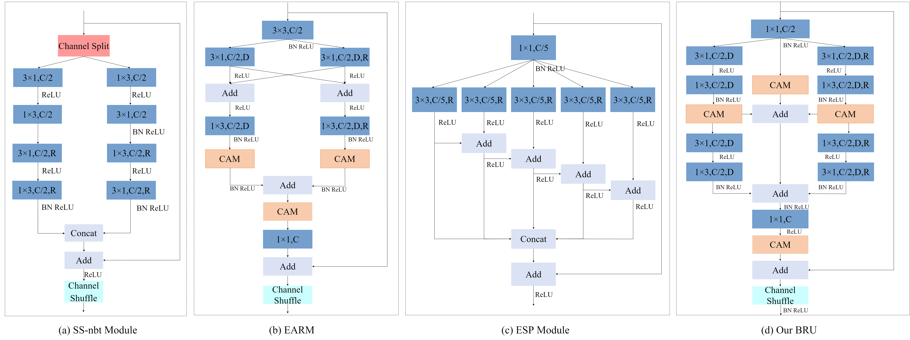
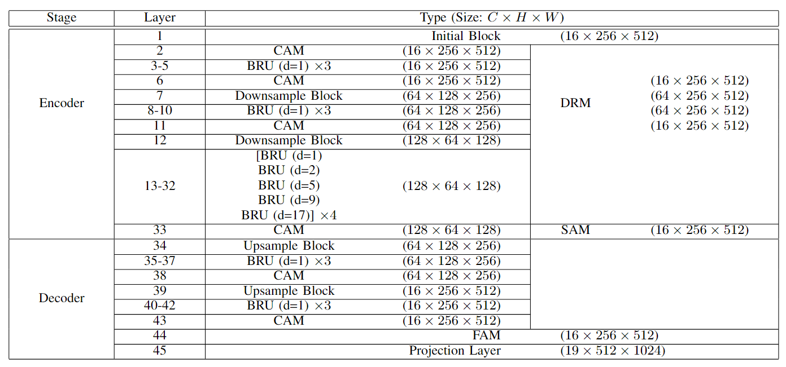
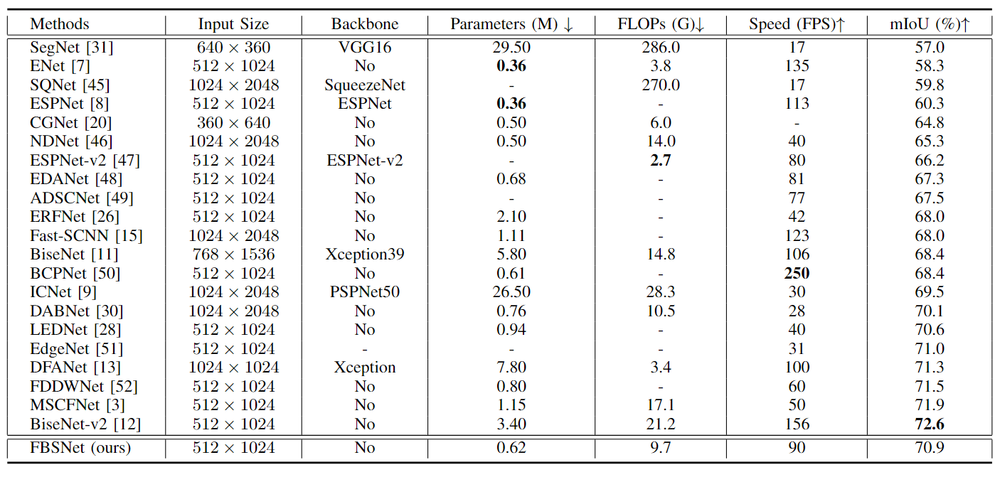

FBSNet: A Fast Bilateral Symmetrical Network for Real-Time Semantic SegmentationGuangwei Gao1† Guoan Xu1† Juncheng Li2* Yi Yu3* Huimin Lu4 Jian Yang51 Nanjing University of Posts and Telecommunications 2 The Chinese University of Hong Kong3 National Institute of Informatics 4 Kyushu Institute of Technology 4 Nanjing University of Science and Technology †Co-first authors, *Corresponding author Contact us: {csggao,cvjunchengli}@gmail.com, xga_njupt@163.com |
Abstract
Real-time semantic segmentation, which can be visually understood as the pixel-level classification task on the input image, currently has broad application prospects, especially in the fast-developing fields of autonomous driving and drone navigation. However, the huge burden of calculation together with redundant parameters are still the obstacles to its technological development. In this paper, we propose a Fast Bilateral Symmetrical Network (FBSNet) to alleviate the above challenges. Specifically, FBSNet employs a symmetrical encoder-decoder structure with two branches, semantic information branch and spatial detail branch. The Semantic Information Branch (SIB) is the main branch with semantic architecture to acquire the contextual information of the input image and meanwhile acquire sufficient receptive field. While the Spatial Detail Branch (SDB) is a shallow and simple network used to establish local dependencies of each pixel for preserving details, which is essential for restoring the original resolution during the decoding phase. Meanwhile, a Feature Aggregation Module (FAM) is designed to effectively combine the output of these two branches. Experimental results of Cityscapes and CamVid show that the proposed FBSNet can strike a good balance between accuracy and efficiency. Specifically, it obtains 70.9\% and 68.9\% mIoU along with the inference speed of 90 fps and 120 fps on these two test datasets, respectively, with only 0.62 million parameters on a single RTX 2080Ti GPU. The code is available at https://github.com/IVIPLab/FBSNet.
FBSNet
|
| The complete architecture of our proposed Fast Bilateral Symmetrical Network (FBSNet). |
|  |
| Comparison of different residual modules. (a) SS-nbt module in LEDNet, (b) EAR module in MSCFNet, (c) Pyramid cascade module in ESPNet, and (d) is our proposed Bottleneck Residual Unit (BRU). |
|  |
| Detailed architectural configuration of Fast Bilateral Symmetrical Network (FBSNet). |
Segmentation Results
 |
| Sample visual results on the Cityscapes validation set. From left to right: input samples, ground-truth references, segmentation outputs of the proposed FBSNet, LEDNet, DABNet, ERFNet, NDNet, and ENet. The region in the yellow dotted box can intuitively highlight the superiority of our method over others. |
|  |
| Comparison with state-of-the-arts image semantic segmentation methods on the Cityscapes test dataset. Although our FBSNet did not achieve the best results on mIoU, the model achieves competitive results on the number of parameters, FLOPs, and FPS. In general, FSBNet achieves the best balance between model performance, model size, and inference time. |
Downloads
BibTex